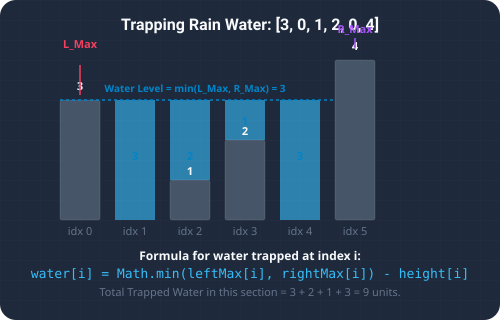

Introduction & Problem Explanation
The Trapping Rain Water problem is a classic hard-level coding challenge. We are given an array of non-negative integers representing an elevation map where the width of each bar is 1. Our task is to calculate how much water it can trap after raining.
For example, given the elevation map [0, 1, 0, 2, 1, 0, 1, 3, 2, 1, 2, 1], the total amount of trapped rain water is 6. Trapping water occurs in the valleys between taller bars. Calculating this efficiently requires us to understand boundaries and limits.

Imagine a series of concrete pillars standing side-by-side on a line. During a heavy rainstorm, water fills up the gaps between them. How much water can accumulate on top of any single pillar? The water level above a pillar is bounded by the height of the tallest pillar to its left and the tallest pillar to its right. Specifically, water will fill up to the height of the *shorter* of these two giants. Any excess water spills over the sides. Thus, the depth of water trapped above a pillar is: water = Math.min(tallestLeft, tallestRight) - pillarHeight. By scanning from both ends, we can easily find these boundaries!
The Algorithmic Approach
1. The Naive Approach (O(n²))
For every bar in the array, we scan to its left to find the maximum height, and scan to its right to find the maximum height. The water trapped at the current bar is Math.min(leftMax, rightMax) - height[i]. Since we do this search for each of the n bars, the time complexity is quadratic: O(n²).
2. The Dynamic Programming Approach (O(n) Time, O(n) Space)
We can precompute the maximum heights seen from the left and right in two passes, storing them in two arrays: leftMax and rightMax. Then, in a third pass, we compute the water trapped at each index. This reduces the time to O(n) but requires O(n) auxiliary storage space.
3. The Two-Pointer Approach (O(n) Time, O(1) Space)
This is the most optimal approach. We maintain two pointers, left = 0 and right = n - 1, along with two variables: leftMax = 0 and rightMax = 0.
- If
height[left] < height[right]: We know that the water level atleftis determined byleftMaxbecauseheight[right]acts as a solid, taller boundary on the right. Ifheight[left] >= leftMax, we updateleftMax = height[left]. Otherwise, we addleftMax - height[left]to our total water, and incrementleft. - If
height[left] >= height[right]: We do the symmetric operation on the right side and decrementright.
O(n) time complexity and O(1) space complexity.
Step-by-Step Execution Walkthrough
Let's trace the two-pointer algorithm on the array height = [0, 1, 0, 2, 1, 0, 1, 3, 2, 1, 2, 1]:
- Step 1 (Initialization):
left = 0,right = 11leftMax = 0,rightMax = 0,water = 0
- Step 2 (Iteration 1): Compare
height[0] (0)andheight[11] (1).- Since
0 < 1, we process the left pointer. - Is
height[left] >= leftMax? Yes,0 >= 0. UpdateleftMax = 0. No water trapped. - Increment
leftto1.
- Since
- Step 3 (Iteration 2): Compare
height[1] (1)andheight[11] (1).- Since
1 >= 1, we process the right pointer. - Is
height[right] >= rightMax? Yes,1 >= 0. UpdaterightMax = 1. No water trapped. - Decrement
rightto10.
- Since
- Step 4 (Iteration 3): Compare
height[1] (1)andheight[10] (2).- Since
1 < 2, we process the left pointer. - Is
height[1] (1) >= leftMax (0)? Yes. UpdateleftMax = 1. No water trapped. - Increment
leftto2.
- Since
- Step 5 (Iteration 4): Compare
height[2] (0)andheight[10] (2).- Since
0 < 2, process left. - Is
height[2] (0) >= leftMax (1)? No. - Trapped water at index 2:
leftMax - height[2] = 1 - 0 = 1unit. Updatewater = 1. - Increment
leftto3.
- Since
- Step 6 (Iteration 5): Compare
height[3] (2)andheight[10] (2).- Since
2 >= 2, process right. - Is
height[10] (2) >= rightMax (1)? Yes. UpdaterightMax = 2. No water trapped. - Decrement
rightto9.
- Since
- Step 7 (Iteration 6): Compare
height[3] (2)andheight[9] (1).- Since
2 > 1, process right. - Is
height[9] (1) >= rightMax (2)? No. - Trapped water at index 9:
rightMax - height[9] = 2 - 1 = 1unit. Updatewater = 1 + 1 = 2. - Decrement
rightto8.
- Since
- Step 8 (Trace continues): The pointers continue to move inwards, trapping water in the remaining low spots (at indices 4, 5, 6).
- Index 4 (height 1): traps
leftMax (2) - height[4] (1) = 1unit.water = 3. - Index 5 (height 0): traps
leftMax (2) - height[5] (0) = 2units.water = 5. - Index 6 (height 1): traps
leftMax (2) - height[6] (1) = 1unit.water = 6.
- Index 4 (height 1): traps
- Step 9 (Completion): The pointers meet at index 7 (the peak height 3). The loop terminates. The total trapped water is
6.
Key Code Snippets & Explanations
Here is why the main logic in the solution is important:
if (height[left] < height[right]): By comparing the heights at the two pointers, we ensure we only compute water heights based on the smaller, limiting boundary, which prevents water from spilling over the lower edge of the valley.water += leftMax - height[left]: SinceleftMaxis the height of the boundary we've seen on the left, and the right boundary is guaranteed to be at leastheight[right](which is larger thanheight[left]), the trapped water depth is simply the boundary height minus the bar height.
Java Implementation Code
Below is the complete, self-contained Java source code that solves this problem. It also includes a main method that traces the execution with console outputs.
package io.practise.dsa;
import java.util.Arrays;
public class TrappingRainWater {
// Brute Force - O(n^2)
public int trapBrute(int[] height) {
int n = height.length, water = 0;
for (int i = 0; i < n; i++) {
int leftMax = 0, rightMax = 0;
for (int j = i; j >= 0; j--) leftMax = Math.max(leftMax, height[j]);
for (int j = i; j < n; j++) rightMax = Math.max(rightMax, height[j]);
water += Math.min(leftMax, rightMax) - height[i];
}
return water;
}
// Optimized - O(n) with Two Pointers
public int trap(int[] height) {
int left = 0, right = height.length - 1;
int leftMax = 0, rightMax = 0, water = 0;
while (left < right) {
if (height[left] < height[right]) {
if (height[left] >= leftMax) leftMax = height[left];
else water += leftMax - height[left];
left++;
} else {
if (height[right] >= rightMax) rightMax = height[right];
else water += rightMax - height[right];
right--;
}
}
return water;
}
public static void main(String[] args) {
TrappingRainWater solver = new TrappingRainWater();
int[] height = {0, 1, 0, 2, 1, 0, 1, 3, 2, 1, 2, 1};
System.out.println("--- Trapping Rain Water Demonstration ---");
System.out.println("Heights: " + Arrays.toString(height));
int water = solver.trap(height);
System.out.println("Total water trapped: " + water);
}
}
Conclusion
Solving the Trapping Rain Water problem highlights how we can leverage key data structures and algorithmic paradigms (like two pointers, hash maps, or dynamic programming) to significantly optimize runtime and simplify code complexity.